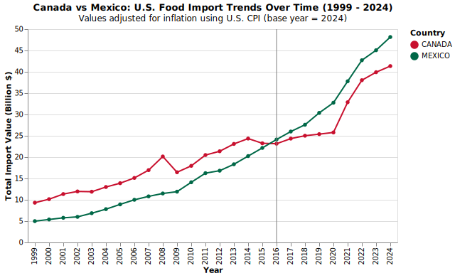
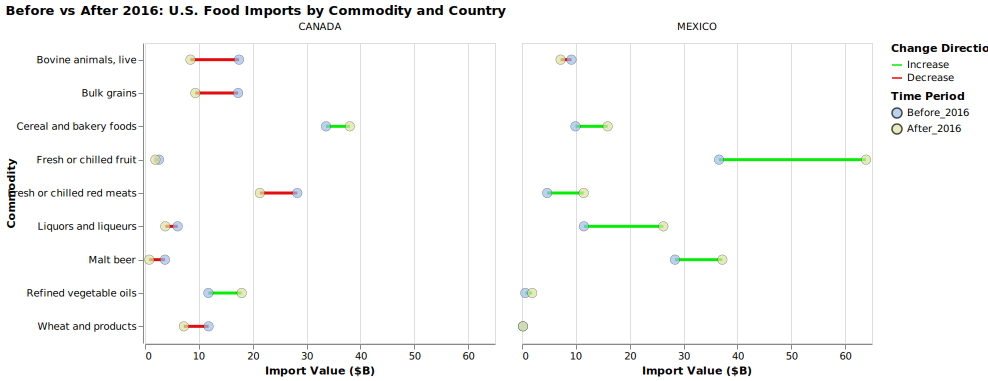

U.S. Food Imports
Introduction: The Growing Role of Food Imports in the U.S. Economy
Over the past few decades, the United States has become increasingly dependent on international markets to meet its food demand. While the nation remains one of the world's largest agricultural producers, the volume and value of imported food products have expanded dramatically, reshaping the structure of the American food system. From fresh fruits and vegetables to seafood, beverages, and processed goods, imported foods now account for a substantial and growing share of what Americans consume. Several forces have driven this trend. Globalization and trade liberalization, trade agreements such as NAFTA, have lowered barriers to food imports and encouraged multinational supply chains. At the same time, shifts in consumer preferences toward year-round availability, dietary diversity, and exotic or specialty products have created sustained demand for imports beyond what domestic producers can supply.

Figure 1 shows how total U.S. food imports have changed from 1999 to 2024 after adjusting for inflation. Even when measured in 2024 dollars, the overall trend is clearly upward: total import values increased over time.
There was a small dip during the 2008–2009 financial crisis, followed by steady growth through the 2010s. After 2020, import values remained high but grew more slowly, showing that much of the recent nominal rise came from inflation rather than an increase in trade volume. Overall, the chart shows that U.S. food imports have steadily expanded over the past 25 years, even after accounting for price changes.
Country Analysis: Top Exporting Countries to the U.S.
Figure 2 shows the countries that have contributed the most to U.S. food imports between 1999 and 2024. Canada and Mexico stand out as the top exporters, together accounting for a large share of total food imports over the past 25 years. These strong trade relationships reflect both geographic proximity and long-standing agreements such as NAFTA and the USMCA, which have made cross-border trade in agricultural goods efficient and consistent.
Other major exporters include Italy, France, and China, highlighting the diversity of imported food products—from European beverages and specialty items to manufactured and processed goods from Asia. Overall, the chart emphasizes that the U.S. food supply is deeply connected to both neighboring and overseas trading partners.
Canada vs. Mexico: U.S. Food Import Trends Over Time (1999-2024, Inflation-Adjusted)

Figure 3 compares U.S. food import trends from Canada and Mexico between 1999 and 2024, with values adjusted for inflation to 2024 dollars. Both countries have shown steady long-term growth in food exports to the United States, reflecting the strength of North American trade relationships over the past 25 years.
In the early 2000s, Canada consistently led as the top supplier, but Mexico's exports have grown faster over time. Around 2015, Mexico's food exports to the U.S. surpassed Canada's, continuing to rise sharply through the 2020s. This shift likely reflects expanded agricultural trade under NAFTA and later the USMCA, as well as increasing U.S. demand for year-round access to fresh produce.
The Trump administration's renegotiation of NAFTA introduced a period of uncertainty for North American trade, but the resulting USMCA agreement ultimately reaffirmed tariff-free food trade between the three countries. As a result, both Canada and Mexico maintained strong export growth to the U.S., though Mexico's agricultural sector benefited most from stable access to U.S. markets and rising demand for imported produce.
Overall, the chart highlights how trade policy and regional integration have shaped the U.S. food import landscape—Canada remaining a key supplier of processed goods, and Mexico emerging as the dominant source of fresh agricultural products.
Figure 4 breaks down the composition of U.S. food imports from Canada and Mexico, providing context for the long-term trends shown in Figure 3. The two countries supply very different types of food products, reflecting their distinct agricultural strengths and trade roles within North America.
From Canada, the United States imports primarily cereal and bakery foods, meats, and seafood, along with processed goods such as chocolate, sauces, and prepared foods. These categories underscore Canada's position as a leading exporter of processed and packaged food products, supported by strong manufacturing capacity and integrated supply chains.
By contrast, Mexico's top exports to the U.S. are dominated by fresh vegetables and fruits, along with beverages such as malt beer and liquors. This composition highlights Mexico's role as the primary supplier of fresh produce to the U.S. market, driven by year-round agricultural production and proximity that allows for fast, large-scale transport of perishable goods.
Together, the two panels reinforce the patterns observed in Figure 3: Canada remains the key source for processed and higher-value food items, while Mexico has emerged as the dominant exporter of fresh agricultural products. These complementary trade roles explain both countries' steady growth in U.S. food export value and the resilience of North American food trade under NAFTA and USMCA, even amid shifting trade policies during the Trump administration.

Figure 5 compares U.S. food imports from Canada and Mexico before and after 2016, highlighting how the composition and scale of trade shifted following changes in North American trade policy. Each line represents a change in import value for a specific commodity, with green lines indicating increases and red lines showing declines.
For Mexico, nearly all major food categories—especially fresh fruits, vegetables, liquors, and malt beer—experienced substantial growth after 2016. This reinforces the pattern observed in earlier figures: Mexico's role as the United States' leading supplier of fresh agricultural products has continued to strengthen, supported by stable trade access under the United States-Mexico-Canada Agreement (USMCA) and sustained U.S. consumer demand for fresh produce year-round.
By contrast, Canada's exports show more mixed results, with modest increases in some commodities (such as refined vegetable oils) but noticeable declines in others like red meats, live animals, and wheat products. These declines suggest possible effects of changing market dynamics, shifting U.S. sourcing preferences, or short-term trade uncertainty during the Trump administration's renegotiation of NAFTA.
Overall, the figure indicates that after 2016, Mexico strengthened its export position across a wider range of agricultural goods, while Canada's trade patterns remained more stable but less growth-oriented. The contrasting trends emphasize how both geography and trade policy shaped the evolving structure of U.S. food imports in the post-2016 era.